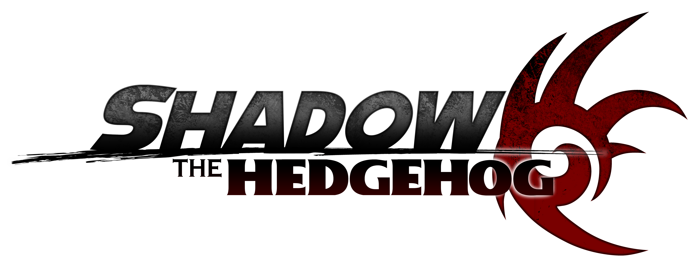

Herói ou vilão, você escolhe! O jogo solo do Shadow apresenta uma narrativa que muda dependendo se você completar os objetivos do lado da luz, trevas ou ao criar seu proprio caminho, com as fases e história mudando de acordo.
O jogo foi controversio, tanto pela a habilidade de usar armas de fogo, quanto a progressão e controles do jogo. Em 2023 um grupo de fãs criou uma versão do jogo que consertava os controles e progressão do jogo, além de introduzir diversas melhorias para o jogo.
Tendo ~~~~~~~ como membros importantes para esse projeto, Shadow the Hedgehog: Reloaded é a versão definitiva desse jogo.
A primeira aventura 3D marcou uma nova era para a franquia, com um maior foco em história e estilo de gameplay diferenntes para todos os seis personagens jogaveis.
O jogo original rodava no Dreamcast, o console mais poderoso da época e que usava varios recursos do DirectX para seus efeitos visuais.
O Gamecube, console que teve o primerio porte de SA1 não possuia esses recursos, resultando na remoção desses efeitos e outros bugs introduzidos como resultado.
Todos os portes subsequentes tiveram a versão do Gamecube como base, resultando em todos eles tem uma iluminação pior e mais bugs que a versão original.
A melhor forma de jogar Sonic Adventure 2 no celular e emular a versão de Dreamcast com o emulador REDREAM